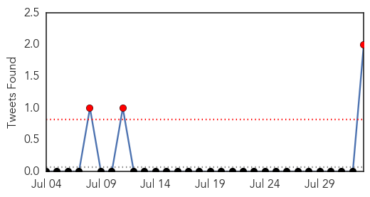
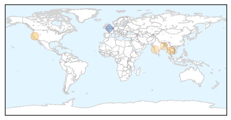

Dengue Fever
30-Day Web Trend
1 alerts, 2 warnings

30-Day Twitter Trend
3 alerts, 0 warnings

Article Locations
Article Confidences

Top Articles:
- 0.990
- There is no health crisis from immigrant children at the border
- 0.909
- The World’s First Dengue Vaccine Could Be Available in Southeast Asia Next Year · Global Voices
- 0.896
- Outbreak: Dengue spreads geographically, patient count reaches 49
- 0.751
- Kolhapur Municipal Corporation to seize remove discarded tyres to prevent dengue
- 0.686
- Encephalitis under control in Bengal: Official
Top Tweets:
- 0.864
- RT: We've seen diseases like JE, AIDS/HIV, SARS, H1N1, dengue/malaria. Now Ebola outbreak is the worst in history, they sai…
- 0.683
- RT: Entre la chikungunya, dengue, malaria, zika, ébola y funcionarios ineptos, vagos, cogecuartos, incapaces, corruptos..N…
Unknown
30-Day Web Trend
6 alerts, 3 warnings
30-Day Twitter Trend
1 alerts, 0 warnings

Article Locations

Article Confidences

Top Articles:
- 0.943
- The Assam Tribune Online
- 0.937
- Japanese Encephalitis vaccination not effective during transmission: Experts
- 0.936
- Florida Beachgoers Warned Of Deadly Disease By CDC
- 0.917
- Chicago Tribune
- 0.917
- Chicago Tribune
- 0.917
- Chicago Tribune
- 0.917
- Chicago Tribune
- 0.917
- Chicago Tribune
- 0.917
- Chicago Tribune
- 0.917
- Chicago Tribune
- 0.882
- CDC Cautions Visitors to Florida’s Beach about Vibrio vulnificus
- 0.866
- Eleven gunmen killed in Lebanon fighting -official
- 0.866
- Some Israeli ground forces withdraw from Gaza
- 0.866
- Syrian Islamist gunmen seize Lebanese border town police station
- 0.866
- refugees from northern Gaza town can return
- 0.866
- Israel holds off on attending Gaza truce talks in Cairo
- 0.829
- New infection from deer ticks shows up in US
- 0.769
- 97 gastroenteritis patients hospitalized in Multan
- 0.757
- Arunachal Pradesh taking necessary steps to control JE spread
- 0.715
- Emergency funding to address canola virus
- 0.643
- Crib deaths back in Bengal
- 0.638
- Health Advisory Issued for Devils Lake on Oregon Coast
- 0.623
- UN warns of 'rapidly unfolding' health disaster in Gaza
- 0.623
- More than 220,000 displaced return home: UN
- 0.608
- Toxins in water leads to state of emergency in Ohio
- 0.600
- Dogs, horses show high rates of Lyme disease
- 0.590
- Toxins in water leads to state of emergency in Ohio
- 0.578
- Warning on Vibrio Bacteria Issued By Florida Officials
- 0.566
- Why seek treatment abroad, asks Msipa
- 0.556
- Toledo water supply alert to remain in effect overnight
- 0.553
- Toledo water improving but toxins still a concern for 2nd day
- 0.541
- Abandoned baby with Down syndrome may prompt bans on surrogacy
- 0.541
- Poland protests Russian import ban with 'apple selfies'
- 0.541
- Paris police officer detained over missing cocaine
- 0.541
- Israeli PM warns Hamas amid reports of partial withdrawal from Gaza
- 0.541
- France tops requests to erase online footprint, says Google
- 0.541
- French-Moroccan 'jihadist' detained at Charles de Gaulle
- 0.541
- Deadly attack on Lebanese soldiers prompts fears of Syria spillover
- 0.540
- Why seek treatment abroad, asks Msipa
- 0.531
- In South Sudan, response to looming threats of disease and malnutrition is a race against time and the elements - South Sudan
- 0.529
- Water ban for some in SE Michigan prohibits drinking, bathing due to Toledo, Ohio water emergency
- 0.515
- Dr. Goldhush Now Offers Solutions for Patients Suffering from TMJ
- 0.515
- Health advisory issued for Hayden Lake
Top Tweets:
- 0.730
- RT: Vuelve Gusana Simenez .. hablando de la malaria que hay en el país, despues de haberse tomado 7 meses de vacaciones Sobera…
- 0.714
- RT: Que ha pasado con el estado del sistema de salud venezolano? La Malaria esta de vuelta, y escasez de anti-retrovirales en 20%…
- 0.654
- RT: En el año 2009, Minho fue nombrado embajador de UNICEF, para proteger a niños africanos contra la malaria :) Aquí... h…
- 0.586
- RT: Malaria : un médicament balaie le parasite en douze heures: C’est la première fois en 20 ans qu’on découvre un... http://t.…
- 0.569
- RT: No se a Uds pero estoy harta de tanta malaria en est pais!!!No hay ninguna buena noticia?
- 0.506
- RT: @Su_Gimenez estuviste 7 meses de vacaciones, hablas de malaria, default? Mucha lampara en la cara, muy divine pero muy …